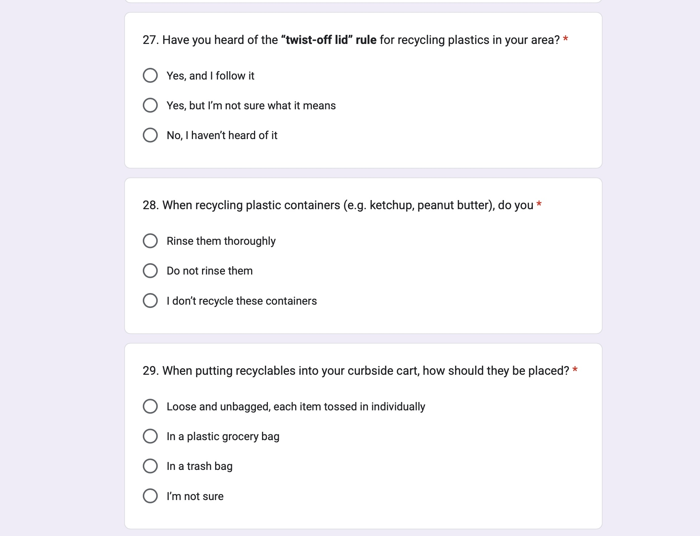
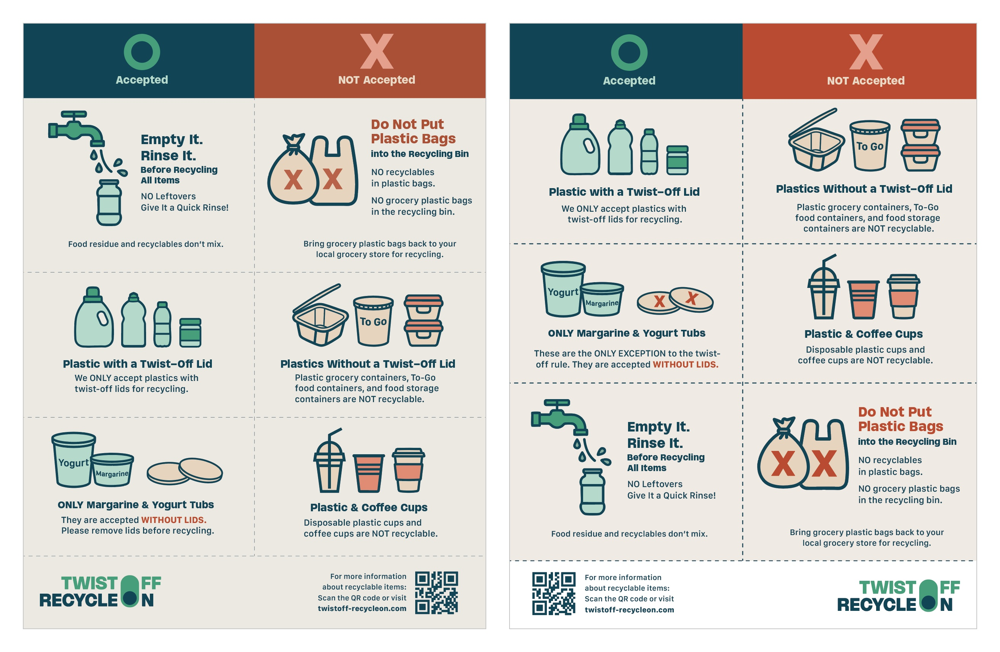
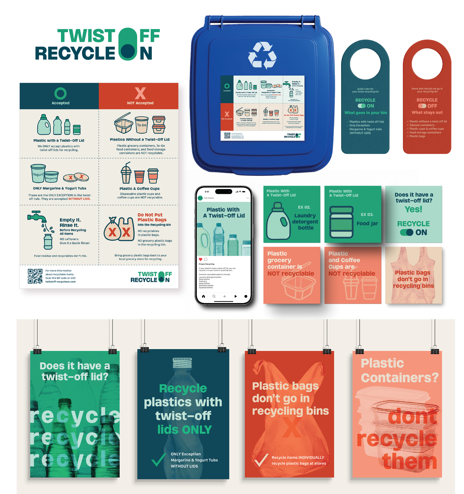
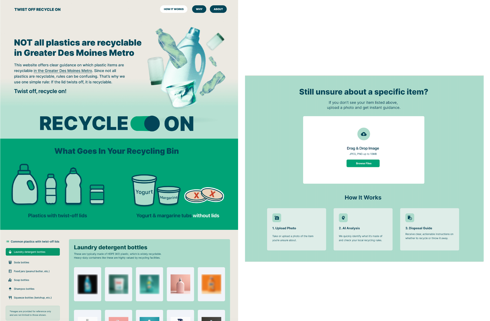

Abstract
Recycling is often presented as a simple environmental action, yet residents must interpret local rules that may conflict with packaging symbols and general recycling messages. This Practice Review Article critically reflects on the development of Twist Off, Recycle On, a visual communication system for plastic recycling in Des Moines, Iowa, USA, and surrounding communities served by Metro Waste Authority (MWA). A communication audit, preliminary observations, a municipal staff questionnaire, and a survey of 109 residents informed the design. Two rounds of formative feedback from participants informed revisions to the initial flyer design and the development of the broader visual communication system. The article examines how illustrated examples, concise language, colour coding, and an accepted/not-accepted structure were developed to support everyday disposal decisions for plastic items. The case offers a situated reflection on how resident input and formative feedback shaped the translation of local requirements into visual guidance intended to make plastic recycling information clearer and more accessible.
Keywords
Introduction
Recycling has been part of public environmental discourse in the United States for decades, but national recycling and composting rates remain limited. According to the U.S. Environmental Protection Agency, the national recycling and composting rate for municipal solid waste was 32.1 percent in 2018 (United States Environmental Protection Agency, 2020). A 2024 national report estimates that only 43 percent of U.S. households participate in recycling (Appel et al., 2024, p. 4), while a 2025 National Academies report identifies “confusion over what materials can be recycled” as one of the main barriers to recycling (National Academies of Sciences, Engineering, and Medicine, 2025, p. 138). Recycling participation is shaped by a range of contextual and behavioural factors, but communication plays an important role in how residents understand and act on recycling guidance. Nixon and Saphores (2009) found that different sources of recycling information influence household decisions to begin recycling, while Willman (2015) found that the mode of information delivery affected residents’ adoption of a curbside recycling programme change. Together, these findings suggest that effective recycling communication requires information to be understandable, accessible, and actionable within a specific local context. This communication challenge is particularly important because recycling rules are not uniform across communities (Appel et al., 2024, p. 14).
Although recycling is often framed as a simple environmental action, it requires residents to interpret a complex set of rules shaped by material type, local processing capacity, curbside collection guidelines, and municipal recycling requirements. In addition, broader consumer assumptions about recyclability are often informed by product labels, packaging claims, and generalised environmental messaging, which may not align with the specific recycling capabilities of local systems. In this context, confusion about what can and cannot be recycled is not only an infrastructural issue, but also a communication issue. Studies of recycling communication have shown that consumers often struggle to interpret packaging labels and recycling symbols (Buelow, Lewis and Sonneveld, 2010), and that signage depicting permitted items as pictures or icons can support more efficient sorting than text alone (Wu et al., 2018). These studies, however, offer less insight into how locally specific recycling rules are translated into everyday visual guidance through an iterative design process informed by participant feedback.
This article reflects on recycling communication as an everyday design problem. Its guiding question is: How can locally specific plastic recycling requirements be translated into more understandable and accessible guidance for residents’ everyday disposal decisions? The focus is a research-informed design process that identifies gaps between local plastic recycling guidelines and residents’ knowledge and understanding of those guidelines, and uses these findings to inform the development of visual communication materials.
Understanding the Local Recycling Context
Communication Audit
The Des Moines area in Iowa, USA, was selected as the case-study setting to focus the project on a specific local recycling system rather than the wide variation in recycling requirements across regions. The principal author’s local presence facilitated observations and survey distribution and supported a better understanding of the context in which residents interpret and apply local plastic recycling guidelines. The project began with a communication audit of existing recycling materials published by Metro Waste Authority (MWA), including digital flyers, website content, and recycling guides available to the public. This focus was necessary because recycling guidelines in Des Moines and surrounding communities are largely based on MWA’s accepted-material policies and curbside recycling requirements (Metro Waste Authority, no date a, no date b). For example, MWA’s webpage on plastics with twist-off lids lists accepted items such as laundry detergent, soda, soap, and shampoo bottles, food jars, and squeeze bottles; asks residents to rinse containers before recycling; and excludes items such as berry containers, plastic bags, and food storage containers (Metro Waste Authority, no date a).
Field Observations
After reviewing these guidelines, the principal author conducted preliminary observations at a university cafeteria, as well as at local grocery stores, restaurants, and coffee shops. These observations revealed instances of plastic disposal that did not align with local recycling guidelines. Many everyday food-related plastic packages are not accepted through the local curbside system, although residents may assume they are recyclable simply because they are made of plastic or carry a recycling symbol. The audit also identified MWA’s guideline that plastics with twist-off lids are accepted, with margarine and yogurt tubs—without their lids—as the only exceptions (Metro Waste Authority, no date a). Local media coverage has likewise highlighted mistaken assumptions about the recyclability of everyday plastic items, including cups and food packaging, and confusion caused by recycling symbols (Ta, 2025). The issue, therefore, was not only whether information existed, but whether it clearly guided everyday recycling decisions.
Municipal Staff Questionnaire
To better understand local recycling rules and operational challenges, a questionnaire was sent to Des Moines municipal staff involved in recycling communication and public works. Two staff members, a communications specialist and a public works operations manager, responded in December 2024; because the questionnaire sought factual clarification of operational rules rather than data about the respondents, it was conducted as preliminary consultation outside the IRB-approved protocol. Plastic grocery bags emerged as a major concern in their responses. One respondent explained that plastic bags and similar film are not accepted at MWA’s recycling facility because they can tangle in equipment and cause work stoppages. Another emphasised that recyclables should be placed loose in the cart rather than inside plastic shopping bags or garbage bags. Their answers did not always match MWA’s published guidance, however; for example, one respondent advised keeping lids on margarine and yogurt tubs, which MWA asks residents to remove. The project therefore followed MWA’s guidance, as its facility determines which materials are accepted. These responses informed the questions examined in the resident survey.
Resident Survey (n=109)
Following the preliminary research, a survey of 109 residents in Des Moines and surrounding communities was conducted to examine knowledge, self-reported practices, information sources, and areas of uncertainty related to local plastic recycling guidelines. Questions addressed everyday plastic items, the twist-off lid rule, container preparation and disposal, and recycling information sources and needs. These topics were selected based on the communication audit, preliminary observations, and municipal staff responses. Selected questions are presented in Figure 1.

The survey targeted residents of Des Moines and surrounding communities served by MWA and was shared on local community websites. Public works staff in these cities were invited to participate by email, and professional contacts of the research team were also invited through LinkedIn. The survey remained open for approximately three weeks, and 109 respondents participated. It was approved by the Institutional Review Board at Grand View University (IRB approval no. 393-25). The survey was administered through Google Forms. Participation was voluntary, and questionnaire submission indicated informed consent. Closed-ended responses were summarised as frequencies and percentages to identify misunderstandings, reported disposal practices, and information sources relevant to the design, and open-ended responses were reviewed for recurring requests, such as clearer labels and visual examples.
Key Findings
The results indicated gaps in respondents’ awareness and understanding of local plastic recycling guidelines. Many misidentified everyday food-related plastic items as recyclable, and 67.9 percent had either not heard of the twist-off lid rule or were unsure what it meant. While 67 percent reported rinsing recyclable plastic containers thoroughly, 33 percent reported either not rinsing them (11 percent) or not recycling these containers at all (22 percent). Respondents most commonly reported obtaining recycling information through city websites, posters or stickers on bins, and social media. Together, these findings informed the content and communication formats of the visual communication system.
Design Development
Based on the preliminary and primary research findings, a visual communication system focused on plastic recycling was developed because it emerged as an area of confusion. The design focused on the most confusing local rules, including the twist-off lid guideline and locally accepted plastic items, to make this information clearer, more accessible, and actionable for everyday use. The twist-off lid guideline became the system’s central message and informed the project’s call to action, “Twist Off, Recycle On.” Table 1 summarises how the research findings informed key design decisions.
| Research finding | Design decision |
|---|---|
| Limited awareness or understanding of the twist-off lid rule | Establish the twist-off lid rule as the primary message. |
| Misidentification of everyday food-related plastic items as recyclable | Present illustrated examples of locally accepted and not-accepted plastic items side by side. |
| Municipal staff identified plastic bags and bagged recyclables as operational concerns | Include a prominent “Do Not Put” message for plastic bags and instructions to place recyclables loose in the cart. |
| Open-ended responses requested clearer labels, photo guides, and visual examples | Use illustrations of familiar items, concise language, and paired O/X symbols to provide visual guidance. |
| Respondents reported obtaining recycling information through city websites, bin posters or stickers, and social media | Develop print and digital materials suited to these communication channels. |
Table 1. Research findings and corresponding design decisions
in the development of Twist Off, Recycle On.
The initial design phase centred on a flyer as the primary communication format. This choice was informed by respondents’ reported use of posters or stickers on bins and requests for visual guides and flyers. A letter-size flyer could be easily printed at home and placed on a refrigerator as a quick reference or attached to or near a household recycling bin. It was intended to function as an accessible everyday reference tool that residents could consult at the moment of disposal.
The visual communication strategy was informed by survey responses emphasising the need for clear image-based references. Familiar plastic items were depicted as illustrated examples intended to help residents distinguish items accepted through the local curbside system from those that are not. The accepted and not-accepted categories were juxtaposed to allow direct visual comparison at a glance.
Deep green and brick-red were used to distinguish accepted from not-accepted items and emphasise crucial instructions such as “do not” and “without lids.” These cues were intended to help residents quickly recognise the appropriate action, supporting communication beyond words. The specific shades were selected deliberately: brick-red was intended to convey caution without appearing alarmist, while deep green was intended to convey a calmer, more trustworthy tone.
To provide cues beyond colour, the categories were reinforced with explicit O and X symbols and consistent line-based icons, intended to remain distinguishable when colour cues were unavailable. Recurring illustrations reinforced the twist-off lid guideline and its exceptions. Additionally, the project identity, rendered as a toggle switch reading “Twist Off, Recycle On,” condensed the central guideline into a recognisable visual metaphor. Together, the palette, paired symbols, recurring graphics, and structured grid were intended to help residents interpret the guidelines quickly and apply that understanding more confidently in everyday recycling decisions.
Formative User Testing and Refinement
After the initial flyer prototype was developed, structured user feedback interviews were conducted with six participants, recruited through the second author’s personal network, to explore the clarity of the plastic recycling rules and ease of interpretation. Because the flyer needed to be understood without prior knowledge of MWA’s rules, participants were not limited to Des Moines residents. Participants received the flyer by email before taking part in telephone interviews of approximately 10 minutes. Questions addressed accepted plastic items, the twist-off lid guideline and its exceptions, container preparation, excluded items, confidence, ease of understanding, confusing elements, and suggested improvements. The interviews focused on which elements supported recognition and comprehension and which prompted hesitation or misinterpretation. Recordings were reviewed and summarised in notes to identify points of confusion and suggestions for design revisions. The interviews were conducted under the same IRB approval as the resident survey, and participants gave verbal consent at the beginning of each interview.
Two patterns informed the revisions. First, participants understood the central twist-off lid rule, but could overlook the preparation instructions accompanying the margarine and yogurt tub exception. One participant initially missed that these tubs are accepted only without their lids and recognised this detail when prompted to reread the section. Second, participants requested clearer guidance for items not pictured on the flyer, including other tubs or containers with twist-off lids. This suggested a need to clarify how the guideline applies to unfamiliar items, rather than simply expanding the examples. Participants also identified the two-column accepted/not-accepted structure, icons, and layout as helpful, supporting their retention. Table 2 summarises this feedback and the corresponding design refinements.
| User feedback | Design refinement |
|---|---|
| Accepted and not-accepted items needed stronger visual distinction. | Strengthened the central dividing line and adjusted the red background to distinguish the categories. |
| The tub exception and lid-removal instructions needed to be more explicit. | Emphasised “ONLY Margarine & Yogurt Tubs” and added X markers to the illustrated lids. |
| Plastic-bag restrictions needed greater emphasis. | Enlarged the X markers on plastic bags and emphasised the “Do Not Put Plastic Bags” instruction. |
| Rinsing instructions could be overlooked. | Repositioned “Empty It. Rinse It.” after the item categories so that it reads as a preparation step applying to all accepted items. |
| Supporting information and branding needed clearer organisation. | Refined the placement and hierarchy of the QR code, website information, and project logo. |
Table 2. Participant feedback and corresponding revisions
The revisions therefore focused on targeted adjustments rather than a full redesign. Rinsing instructions and the prohibition on bagged recyclables were emphasised as requirements applying across accepted items. The exception was clarified to specify that only margarine and yogurt tubs are accepted without twist-off lids. X markers were added to the illustrated lids and enlarged on the plastic bags. The central dividing line was strengthened, and the red background was adjusted to sharpen the distinction between categories, responding in part to one participant’s observation that the original red appeared closer to brown (Figure 2).

After the revisions, a second round of formative user feedback was conducted with six participants to explore how they interpreted the revised flyer. The four participants returning from the first round received the revised flyer by email before telephone interviews, which allowed follow-up questions. Two new participants, residents of the principal author’s neighbourhood who recycle through MWA’s curbside programme, completed a Google Forms questionnaire containing the flyer image and feedback questions; as in the resident survey, questionnaire submission indicated consent. Interview recordings were reviewed and summarised in notes, and questionnaire responses were examined alongside the interview feedback. This round examined participants’ understanding of accepted and not-accepted items, the twist-off lid guideline and its exceptions, and preparation instructions. Responses indicated understanding of these rules, confidence in identifying locally accepted items, and an intention to rinse recyclables. Participants also identified colour coding, headings, and concise text as helpful. With a small sample and no before-and-after comparison, these responses provided formative feedback on interpretation and self-reported confidence and intentions.
Extending the Visual Communication System
After the flyer was refined through two rounds of formative feedback, its visual language and core information were extended into a coordinated system of public education materials for household, shared, and digital contexts. These included a landscape flyer for placement on a recycling bin, posters, door hangers, stickers, social media graphics, and a website (Figure 3). Multiple communication touchpoints were intended to create repeated opportunities to encounter the same core information in everyday contexts. Research suggests that repeated recycling reminders can support more consistent recycling behaviour, with stronger effects when reminders are sustained over time (Fuhrmann-Riebel et al., 2026).

Although the materials shared a consistent visual language, each format had a distinct intended role. The flyer organised detailed rules and preparation instructions for reference at the moment of disposal. Posters adapted selected messages for shared spaces, such as community buildings, schools, workplaces, apartment mailrooms, and areas near communal recycling bins. Large illustrations, bold headlines, and repeated typographic patterns were intended to attract attention and reinforce key guidelines. Social media graphics divided the information into shorter, sequential messages intended to reinforce key recycling guidelines and provide clear disposal instructions, while the website provided a digital destination for further information.
The website concept also explored an AI-assisted identification feature through which users might upload a photograph of a plastic item and receive locally relevant disposal guidance (Figure 4). This concept responded to participants’ requests for guidance on unfamiliar items not pictured on the flyer. It was a speculative design proposal rather than an implemented or evaluated feature. Implementation, classification accuracy, handling of uncertainty, accessibility, and image privacy would require separate development and evaluation.

Reflection and Next Steps
Although recycling behaviour is shaped by many factors, this project illustrates how local inquiry and participants’ interpretations informed design decisions for recycling education. It reflects on how locally specific plastic recycling requirements can be translated into clearer and more accessible visual guidance for everyday use.
The flyer, poster, social media, and website components were designed to strengthen how local recycling information is encountered, understood, and used in daily life. The process connects visual communication, municipal operations, and environmental education: municipal input identified operational concerns, while resident responses informed the content and communication formats. In this way, visual communication was intended to bridge local recycling requirements and residents’ understanding of those requirements in everyday disposal decisions.
Several limitations should be acknowledged. Survey participation was voluntary and may have favoured residents already interested in recycling, and the analysis was descriptive. Feedback participants were recruited through the authors’ personal networks, and four of the six in the second round had also joined the first, so their responses may partly reflect familiarity, although the two new participants saw only the revised flyer. Because the designers also conducted the feedback sessions, responses may lean favourable. Only the flyer was tested; the other materials were not evaluated. Finally, the guidance reflects MWA’s rules at the time of the study and requires ongoing verification. The project is therefore a situated, formative case rather than evidence of behavioural change. Nevertheless, this Practice Review Article highlights the importance of clearer communication in supporting informed participation. The possibility that small improvements in everyday information could support more accurate recycling decisions provides the rationale for the project’s next phase, which will examine comprehension and sorting accuracy in comparison with existing MWA information.
References
Appel, M., Francis, A., Payne, A., Tanimoto, A. and Mouw, S. (2024) State of Recycling: The Present and Future of Residential Recycling in the U.S. The Recycling Partnership. Available at: https://recyclingpartnership.org/residential-recycling-report-2024 (Accessed: 3 October 2026).
Buelow, S., Lewis, H. and Sonneveld, K. (2010) ‘The role of labels in directing consumer packaging waste’, Management of Environmental Quality: An International Journal, 21(2), pp. 198–213. Available at: https://doi.org/10.1108/14777831011025544.
Fuhrmann-Riebel, H., D’Exelle, B., López Vargas, K., Tonke, S. and Verschoor, A. (2026) ‘Can reminders promote regular pro-environmental behavior? Experimental evidence from Peru’, World Development, 203, 107369. Available at: https://doi.org/10.1016/j.worlddev.2026.107369.
Metro Waste Authority (no date a) Plastic With a Twist-Off Lid. Available at: https://www.mwatoday.com/waste-recycling/recycling-disposal-guide/recycling-guide-items/plastic/ (Accessed: 3 October 2026).
Metro Waste Authority (no date b) Recycling & Disposal Guide. Available at: https://www.mwatoday.com/waste-recycling/recycling-disposal-guide/ (Accessed: 3 October 2026).
National Academies of Sciences, Engineering, and Medicine (2025) Municipal Solid Waste Recycling in the United States: Analysis of Current and Alternative Approaches. Washington, DC: The National Academies Press. Available at: https://doi.org/10.17226/27978.
Nixon, H. and Saphores, J.-D.M. (2009) ‘Information and the decision to recycle: results from a survey of US households’, Journal of Environmental Planning and Management, 52(2), pp. 257–277. Available at: https://doi.org/10.1080/09640560802666610.
Ta, L. (2025) ‘Think your plastic is recyclable? Think again’, Axios Des Moines, 8 August. Available at: https://www.axios.com/local/des-moines/2025/08/08/plastic-recycling-west-des-moines (Accessed: 29 September 2026).
United States Environmental Protection Agency (2020) Advancing Sustainable Materials Management: 2018 Fact Sheet: Assessing Trends in Materials Generation and Management in the United States. Fact Sheet 530-F-20-009. Washington, DC: United States Environmental Protection Agency. Available at: https://www.epa.gov/sites/default/files/2021-01/documents/2018_ff_fact_sheet_dec_2020_fnl_508.pdf (Accessed: 3 October 2026).
Willman, K.W. (2015) ‘Information sharing and curbside recycling: a pilot study to evaluate the value of door-to-door distribution of informational literature’, Resources, Conservation and Recycling, 104, pp. 162–171. Available at: https://doi.org/10.1016/j.resconrec.2015.08.012.
Wu, D.W.-L., Lenkic, P.J., DiGiacomo, A., Cech, P., Zhao, J. and Kingstone, A. (2018) ‘How does the design of waste disposal signage influence waste disposal behavior?’, Journal of Environmental Psychology, 58, pp. 77–85. Available at: https://doi.org/10.1016/j.jenvp.2018.07.009.
Author Biographies
Hyena Nam is an Assistant Professor of Interdisciplinary Design at Florida State University and an award-winning graphic designer, design researcher, and educator. Working across the Korean and U.S. design industries, she uses research-driven visual communication to address real-world challenges related to sustainability and marginalized communities, including public understanding of proper recycling practices.
Kelsi Turk is a Graphic Design Instructor at NorthWest Arkansas Community College. She sees visual design as a fantastic blend of beauty and communication, and her research explores how design can bring the mundane to life and bridge gaps between people.
Recommended Citation
Nam, H. and Turk, K. (2026) ‘Designing Clarity for Everyday Recycling: A Visual Communication Study in Des Moines, Iowa’, Everyday Life: International Journal of Public Culture, Art and Design, 1(1), pp. 1–13.
Article URL: https://articles.everydaylifejournal.uk/articles/practice-reviews/designing-clarity-for-everyday-recycling/
Copyright
© 2026 The Author(s). Published by Everyday Life: International Journal of Public Culture, Art and Design. This is an open-access article distributed under the terms of the Creative Commons Attribution-NonCommercial 4.0 International Licence (CC BY-NC 4.0), which permits non-commercial use, distribution and reproduction in any medium, provided the original work is properly cited. Everyday Life is an independent open-access journal with no submission or publication fees.